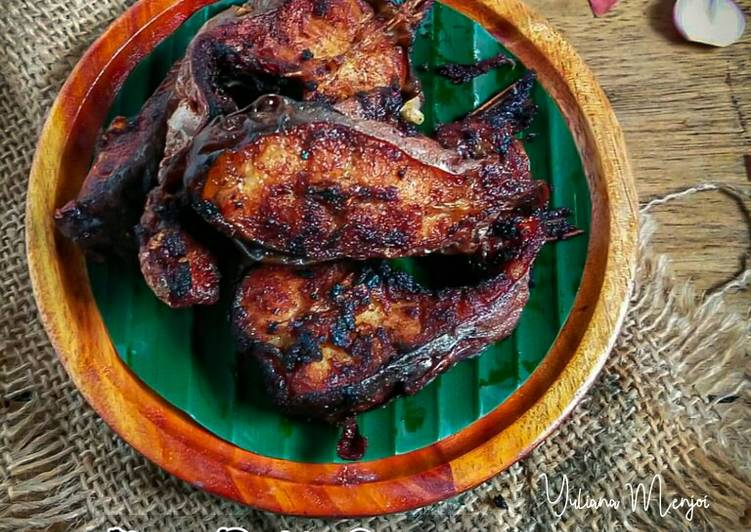

Daftar Isi
Patin Baubar
Ikan Patin Baubar merupakan salah satu makanan khas dari Kalimantan, tepatnya Kota Banjar. Ikan Patin Baubar dimasak dengan memakai tungku dengan bahan bakar tempurung kelapa, yang pastinya akan memberikan pengaruh pada cita rasa dan aroma masakan yang khas. Sebelum dibakar, ikan patin diberikan bumbu berbagai macam rempah. Oleh sebab itu, Ikan Patin Baubar memiliki aroma dan rasa nikmat kaya akan rempah. Ikan Patin Baubar cocok untuk Anda makan sebagai lauk bersama nasi hangat, sambal terasi, dan Terong Baparung atau terong dibakar diberi santan.
Cara Membuat
Bahan:
- 2 ekor ikan patin
- Jeruk nipis
- Kemangi
- Bawang merah, bawang putih dan kemiri
- Cabe merah besar, cabe rawit dan tomat
- Garam, gula dan penyedap rasa
- Gula merah
- 100 ml santan
- Serai, daun jeruk, daun salam, jahe, kunyit dan laos
- Daun pisang
- Lumuri ikan patin menggunakan 1 sendok teh air jeruk nipis dan garam. Kemudian diamkan selama kurang lebih 15 menit.
- Haluskan bawan merah, bawang putih, kemiri, cabe merah, cabe rawit, kunyit laos dan jahe.
- Tumis bumbu yang sudah di haluskan.
- Tambah gula merah dan santan.
- Berikan gula, garam dan penyedap rasa.
- Tambahkan daun salam, serai dan daun jeruk.
- Masukan ikan patin.
- Setelah ikan setengah matang, bungkus dengan daun pisang.
- Tambahkan irisan tomat dan kemangi, lalu bungkus dengan daun pisang.
- Bakar ikan yang sudah di bungkus daun pisang.
- Lalu sajikan.
Cara membuat:

Nama lain
Patin Baubar
Tempat Asal
Kalimantan Selatan
Daerah
Banjarmasin
Bahan Utama
Ikan patin
Informasi lain
Sering disajikan di warung makan khas Banjar.